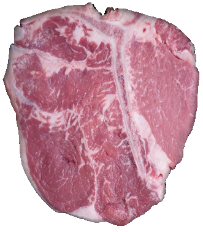

|  |
| This complex object can be animated in real-time using the Flexible plugin. |
| Authors |
Benjamin GILLES, Francois FAURE, Matthieu NESME |
| Contact |
benjamin.gilles@inria.fr |
| License |
Your can distribute this plugin
under
the same license as the core of SOFA. |
| Patents |
|
| APP registration |
in progress |
| Sponsors |
CNRS, INRIA, ANR |